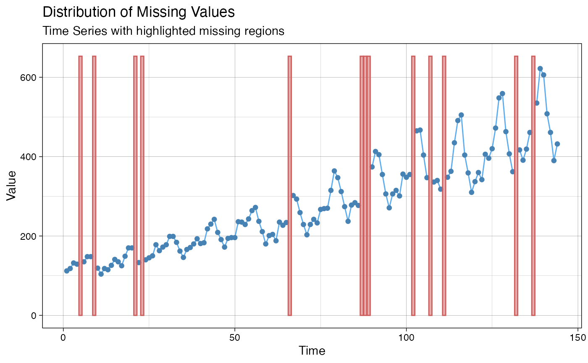

Visualize Distribution of Missing Values
Source:R/ggplot_na_distribution.R
ggplot_na_distribution.RdVisualize the distribution of missing values within a time series.
ggplot_na_distribution( x, color_points = "steelblue", color_lines = "steelblue2", color_missing = "indianred", alpha_missing = 0.5, title = "Distribution of Missing Values", subtitle = "Time Series with highlighted missing regions", xlab = "Time", ylab = "Value", shape_points = 20, size_points = 2.5, theme = ggplot2::theme_linedraw() )
Arguments
| x | Numeric Vector ( |
|---|---|
| color_points | Point color for observations |
| color_lines | Line color |
| color_missing | Background color used for showing NA sequences |
| alpha_missing | Transparency value for background used for showing NA sequences |
| title | Title of the plot (NULL for deactivating title) |
| subtitle | Subtitle of the plot (NULL for deactivating subtitle) |
| xlab | Label for x axis |
| ylab | Label for y axis |
| shape_points | Plotting 'character', i.e., symbol to use |
| size_points | Character (or symbol) expansion: a numerical vector |
| theme | Set a theme for ggplot2. Default is |
Details
This function visualizes the distribution of missing values within a time series. If a value is NA, the background is colored differently. This gives a good overview of where most missing values occur.
See also
Examples
# Example 1: Visualize the missing values in x # x <- ts(c(1:11, 4:9,NA,NA,NA,11:15,7:15,15:6,NA,NA,2:5,3:7)) # ggplot_na_distribution(x) # Example 2: Visualize the missing values in tsAirgap time series ggplot_na_distribution(tsAirgap)# Example 3: Same as example 1, just written with pipe operator x <- ts(c(1:11, 4:9, NA, NA, NA, 11:15, 7:15, 15:6, NA, NA, 2:5, 3:7)) x %>% ggplot_na_distribution()